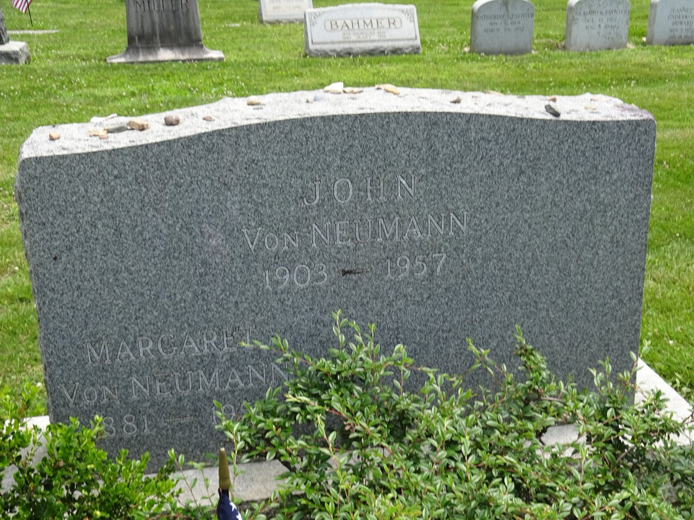

John Von Neumann

Vem var John Von Neumann?
Neumann var matematiker, fysiker, datorforskare och ingenjör och har gjort väldigt många saker. Han har till exempel bidragit till upptäckten av DNA strukturen, skapat det första datorviruset, utvecklingen av digitala datorer, sitt arbete på Manhattan projektet, kommit på matematiska teorier, kvantfysik och fluidmekanik med mera.
Barndom
John von Neumann, eller Neumann János Lajos som han egentligen heter, föddes den 28:e december 1903 i Budapest i Ungern, som då var en del av kejsardömet Österrike-Ungern. Som barn var han något av ett under då han redan som sexåring kunde dividera två åttasiffriga tal med varandra med huvudräkning och kunde konversera på antik grekiska. Han lärde sig många andra språk också, såsom franska, tyska, italienska och engelska.
Vad är Von Neumann känd för?
Manhattan projektet
Det finns en hel del saker Neumann har gjort men det finns några som han är speciellt känd för. Det han framför allt är känd för är hans bidrag till Manhattan projektet, vilket var ett kärnvapenprogram som utvecklade de första atombomberna under andra världskriget. Han var den ledande mannen för designen av implosion mekanismen som användes för att skapa Fat Man bomben som detonerades i Nagasaki. Efter detta fortsatte han att arbeta på ICBM missiler (interkontinentala ballistiska missiler).
Cellulär automata
Neumann var även mycket känd för sin forskning i fluidmekanik, vilket blev en viktig del av sin forskning inom datavetenskap. Inom datavetenskap är han känd för en hel del saker. Han är till exempel känd för sin forskning på självreproducerande automater och cellulära automater, samt att göra en icke biologisk självreproducerande automat. Från år 1949 ansågs detta vara det första datorviruset.
ENIAC
En viktig sak som Neumann har bidragit till är ENIAC datorn. ENIAC (Electronic Numerical Integrator and Computer) är den första elektroniska, digitala, programmerbara, general-purpose datorn som blev klar 1945. Neumann bidrog inte till byggandet av datorn, men han utvecklade programmeringsspråk till den tillsammans med bland andra Alan Turing. Detta är en väldigt viktig sak när det kommer till datavetenskap då detta lade grunden till moderna datorer och programmering. Neumann är även känd för att tillsammans med Alan Turing ha arbetat på filosofin för artificiell intelligens.

Datorarkitektur
Neumann har även kommit på en datorarkitektur, fast den egentligen är väldigt baserad på J. Presper Eckerts och John Mauchlys arbeten, som är skaparna av ENIAC maskinen. Då så kallade “von Neumann arkitekturen” innebar att man lagrade både data och program i datorn minne i samma adress, istället för att ha flera separata externa minnen som man hade innan. Denna arkitektur används fortfarande i moderna datorer.
Saker Von Neumann är mindre känd för
Bidrag till datavetenskap
Utöver detta har Neumann även bidragit en hel del till vetenskaplig datakunskap och numerisk analys. Han kom till exempel på ett system för att se till att när en linjär partiell differentialekvation blir löst numeriskt, så byggs inte antalet error / felmeddelanden upp för varje steg av ekvationen. Detta är fortfarande vanligt idag i stabilitetsanalyser. Neumann hade däremot problem med ickelinjära ekvationer, så han började använda sig av datorer vilket fick honom att inse att man kan använda datorer för att tvinga fram ett svar till en ekvation numeriskt och att de kan lösa problem analytiskt. Han sa då att digitala datorer, som han höll på att utveckla till följd av detta, skulle byta ut analoga datorer och bli början på en ny epok för fluidmekanik.
Väderprognoser
I samband med sin forskning och utveckling av digitala datorer intresserade sig Neumann även i att kunna förutspå vädret. Tillsammans med meteorologen Jule Gregory Charney skrev Neumann år 1950 den första klimat modellerings mjukvaran och använde den för att göra världens första numeriska väderprognos. Utvecklingen av detta gjorde även att Neumann upptäckte global uppvärmning, samt att den berodde på människor som bland annat brände mycket kol i fabriker.
Död
År 1955 ramlade Neumann och fick besöka en läkare. Under sitt doktorsbesök upptäckte hans doktor att Neumann hade en stor svullnad vid sitt nyckelben, vilket visade sig vara en metastas som kom från en cancer som befann sig i antingen skelettet, bukspottkörteln eller prostatan. Cancern kom troligen från Neumanns tid då han arbetade med kärnvapen, då han utsattes för höga halter av radioaktiv strålning. Han dog den 8:e februari 1957 av sin cancer som hade spridit sig till hjärnan och begravdes i Princeton, New Jersey.
Etik
Neumann har inte gjort något särskilt inom datavetenskap som skulle kunna ses som negativt, tvärtom så har det mesta varit uppskattat även idag. Däremot finns ju frågan om kärnvapen. Var det rätt av John von Neumann att hjälpa till med utvecklingen av kärnvapen?
Det är en fråga som kan ha flera svar beroende på vem man frågar och hur man ser på det. Hans bidrag till kärnvapenutvecklingen gjorde trots allt att man fick ett fullt stopp på andra världskriget, vilket i sig är bra, men det blev ett dyrt pris att betala. Bomberna som släpptes över Japan kostade mellan 129000 och 226000 civila liv. Utöver detta ser vi även idag att kärnvapen är ett stort hot, bland annat i konflikten mellan Ryssland och Ukraina, vilket är en biprodukt av Neumanns verk. Till och med Manhattan projektets direktör J. Robert Oppenheimer sa att alla fysiker som har deltagit i projektet har syndat. Till det svarade Neumann “sometimes someone confesses a sin in order to take credit for it”, alltså “ibland måste någon erkänna en synd för att ta åt sig äran för det”.
Därmed kan man rent etiskt säga att Neumann har bidragit till något riktigt hemsk och farligt. Men samtidigt har han bidragit till så pass många andra positiva saker inom bland annat matematik, fysik och datavetenskap att det blir svårt att säga huruvida han är en dålig person för det han gjorde eller inte.